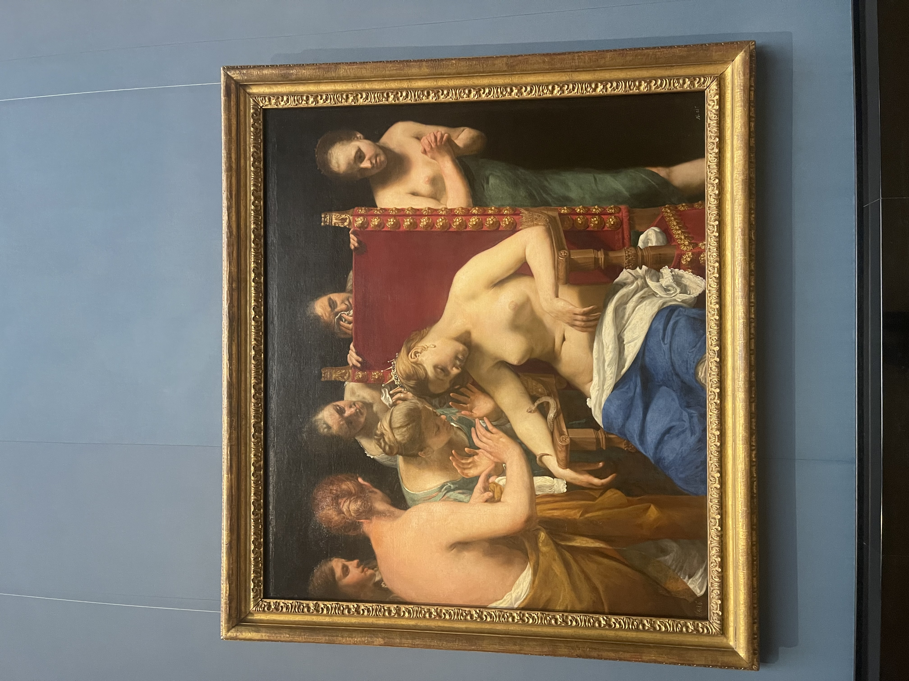
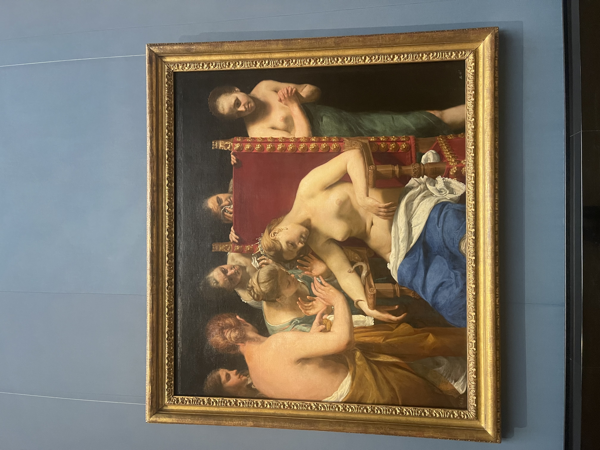
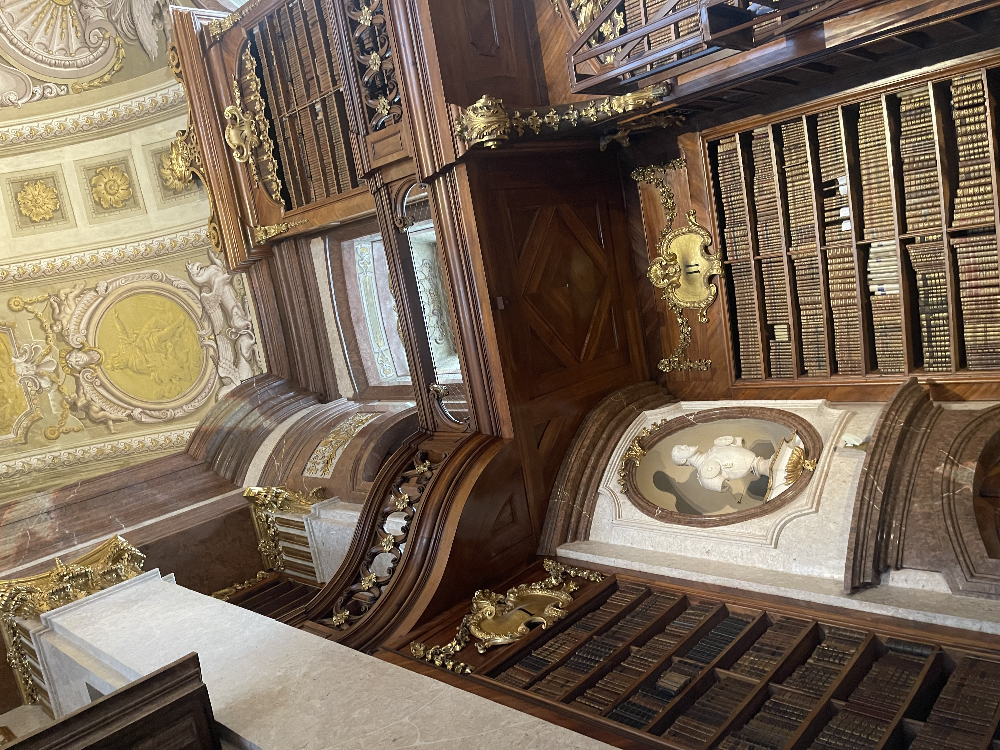
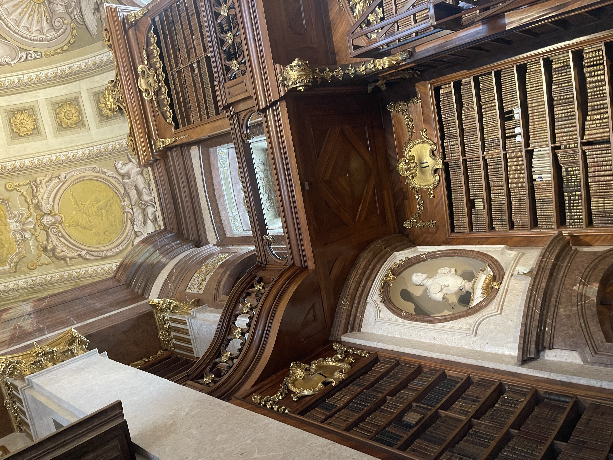

Photo Diary: Museum-hopping through Vienna
Posted July 11, 2025

See some photos of the incredible museums I visited in Vienna! I am a museum fiend, and I went to as many as I could in the few days I was there. Works with a golden border are favorites of the trip.
Kunsthistoriches Museum Wien
This is one of my favorite museums I've ever been to, and the temporary exhibit Arcimboldo, Bassano, Bruegel was one of my absolute favorite exhibits ever. It compared the different ways these three artists chose to interpret the world around them as scientific advancement restructed reality for people of their age. I walked out of this exhibit an Arcimboldo devotee!
Core Exhibit


 


Temporary Exhibit
Vienna National Library
This is one of the most beautiful places I have ever seen with my own eyes. I spent most of my time here staring at the ceiling with my jaw on the floor.
 



Papyrus Museum of the Austrian National Library
As a massive history nerd who just took an Ancient Rome class last semester, this museum was interesting to an embarrassing degree. As a Math major, I especially loved some of documents that featured ancient geometry.
Esperanto Museum of the Austrian National Library
I went into this museum knowing nothing about the constructed language Esperanto and its fascinating history. This tiny museum was incredibly interesting, and it had a great interactive Pac-Man arcade machine that is adapted to teach users about Esperanto. I ordered a history book on constructed languages the second I walked out.
Globe Museum of the Austrian National Library
This museum is located in the same building as the Esperanto Museum, so I decided to pop in and check out some of their beautiful globes. The history of science is one of my personal interests and I loved seeing some of the old astronomical tools and outdated renderings of the Earth.
Belvedere Palace and Museum
I only went to this museum to see Klimt's famous The Kiss in person, but it ended up being one of my favorite stops of the entire trip. I had an amazing time walking around the palace grounds, listening to the audioguide's explanations of the works in their main collection, and visiting their spectacular temporary exhibition, Gustav Klimt - Pigment and Pixel. The temporary exhibit absolutely blew my mind and is in my Top 3 exhibits of all time. I enjoyed every second I spent learning about the technology developed to analyze Klimt's works and, from their chemical makeup, derive information about the works' creation process. The end of the exhibit also recreates some of Klimt's lost ceiling paintings based on the estimations of this technology, which was a remarkable feat to witness. One of my favorite things in the world is seeing art and technology combine in a way that respects the past and enhances art education in the present, and the exhibit embodied that ideal.
Core Exhibit
Temporary Exhibit

Hundertwasser House
Completed in 1985, this apartment house sprang from the mind of painter Friedensreich Hundertwasser. This was an unexpected favorite of the trip for me. The building is so beautiful in person, its architecture radiates excitement and fun, the little shopping area nearby was cozy, and the cafes surrounding it were picturesque with lovely staff. I tried Austria's national drink, Almdudler, at one of these cafes, and it was the absolute perfect bev for that hot day.


Museum of Applied Arts (MAK)
I stopped by this museum because it was on my walk home, though I am not so familiar or comfortable with consuming and appreciating design. The furniture was beautiful, but that is the medium I always have the hardest time connecting with. I ended up really enjoying this museum because of its temporary exhibitions and their odd breadth of content. I especially loved GIRL MEETS MANGA: A Manga Biography from Tokyo (1985-1992), which had physical copies of the manga mentioned for visitors to read, and BLOCKCHAIN:UNCHAINED: New Tools for Democracy, which featured absolutely fascinating visual representations of quantitative concepts that were creatively adapted to design.


Jesuit Church
My final stop on this trip was the Jesuit Church. I'll never say no to a church in Europe and neither should you!


Austria's museums are some of the best I've ever had the pleasure of visiting, and I hoped you enjoyed looking at my photos!